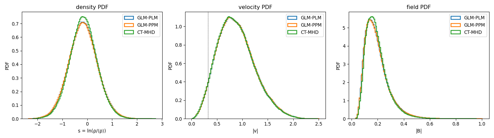
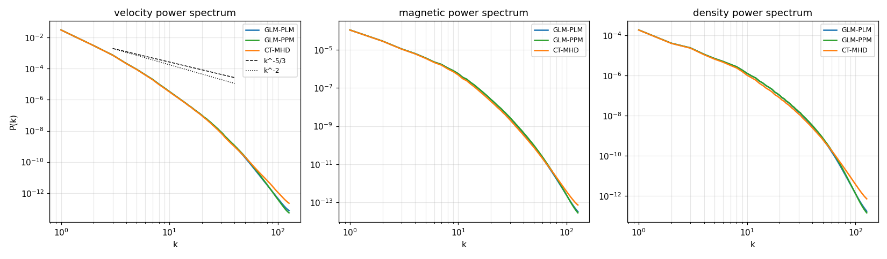
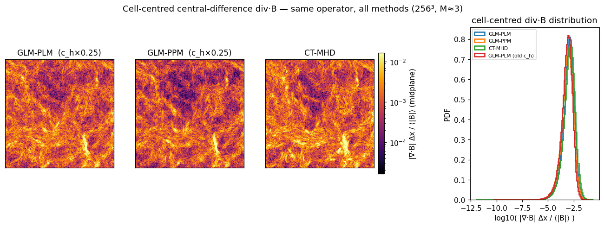
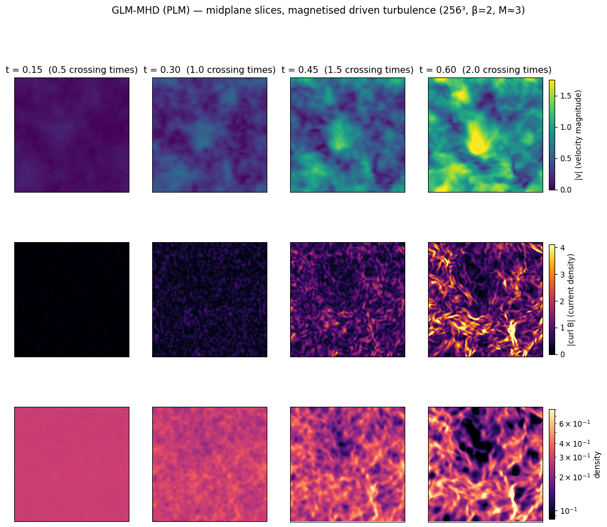
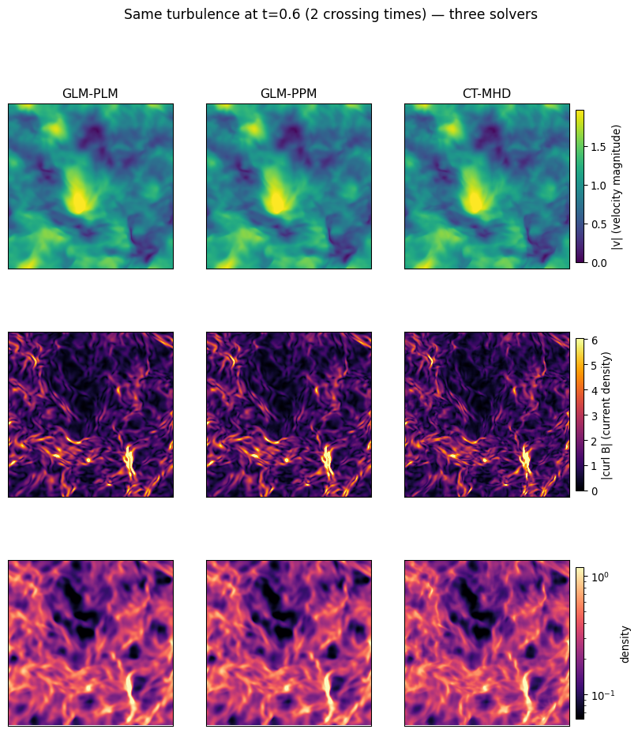

Statistical equivalence at a fraction of the cost — measured on identical magnetised driven turbulence.
256³isothermalβ = 2 Mach ≈ 3RTX A6000
This fork adds a cell-centred, Dedner-cleaned GLM-MHD solver to mini-ramses' GPU port and optimises it heavily. The question this page answers: does the faster solver give the same physics as the reference constrained-transport (CT) scheme? We drive the same turbulence box with the same forcing through three solvers and compare the turbulence statistics, power spectra, and the actual fields.
| solver | B representation | div·B | per-cell work |
|---|---|---|---|
| GLM-MHD (ours) | cell-centred + cleaning scalar ψ (9 vars) | cell-centred, cleaned to a small bounded level | one 1-D HLLD Riemann solve per face |
| CT-MHD (upstream) | face-staggered (constrained transport) | = 0 on faces (machine precision) | 1-D + 2-D-HLLD EMF on edges + induction |
Constrained transport (CT) stores B on cell faces and updates it with an edge-centred electromotive force (a 2-D HLLD Riemann problem), so the discrete divergence is exactly zero forever. That guarantee costs work: extra Riemann solves, the induction update, and a larger per-block memory footprint.
GLM (Dedner) cleaning instead keeps B cell-centred like any other fluid variable and adds a scalar field ψ that advects divergence errors away at the fast wave speed and damps them. div·B is no longer exactly zero — it is held small by the cleaning — but every face needs only a single 1-D Riemann solve, and the lighter, cell-centred layout is what makes the heavy GPU optimisation possible.
Godunov-kernel throughput at 256³ (the fair solver metric, both solvers built with -gpu=fastmath):
| solver / reconstruction | Mcell/s | vs CT |
|---|---|---|
| GLM-MHD — PLM (2nd order) | 1569 | 4.7× |
| GLM-MHD — parabolic PPM (3rd order) | 1065 | 3.2× |
| CT-MHD — PLM (upstream) | 336 | 1.0× |
nsubgrid=2): 8 octs per CUDA block (37.8 KB shared) cuts halo redundancy 27×→8×. GLM's lighter footprint fits; CT's face-B + EMF arrays need ~64 KB and overflow the 48 KB static limit, so CT cannot use this blocking.launch_bounds: each reconstruction kernel gets its own register cap to hit the right blocks/SM (occupancy is the wall, not arithmetic).The two GLM reconstructions span an accuracy/speed knob: PLM is fastest, parabolic PPM is 3rd-order-spatial at 3.2× CT. (The full 7-wave characteristic PPM is the most accurate option on smooth flows but proved too fragile for this strongly supersonic regime — see caveats.)
Identical OU forcing (same seed), evolved to 2 crossing times. The turbulence statistics agree across all three solvers:
| quantity | GLM-PLM | GLM-PPM | CT-MHD |
|---|---|---|---|
| sonic Mach number | 2.944 | 2.944 | 2.928 |
| σ(ln ρ) — density-PDF width | 0.573 | 0.576 | 0.547 |
| ⟨B²/2⟩ — magnetic energy | 0.0226 | 0.0227 | 0.0221 |
| Brms | 0.213 | 0.213 | 0.210 |
The two GLM solvers are nearly indistinguishable (≤0.5%); both match CT to under 1% in Mach and field strength. CT's density PDF is ~5% narrower — consistent with its exact div·B = 0 producing marginally different shock structure. The full distributions overlap:

The cleanest test of "same turbulence": the velocity, magnetic and density power spectra. These overlap through the entire resolved cascade — but getting there required finding and fixing a real dissipation bug first (see the next section).

The first version of this comparison was not a win: the GLM spectra rolled off 1–2 decades below CT at high k in all three fields, and parabolic PPM gave no improvement over PLM. A short systematic investigation traced the cause — and it was not where intuition first pointed:
strong_pressure_jump) fires in only
0.5% of cells at Mach 3, so PPM ≈ PLM was not a fallback artefact — it meant the dissipation lives in
the flux, not the reconstruction (so raising reconstruction order can't help).c_h monotonically restored small-scale power in
all three fields until, at c_h × 0.25, GLM matched CT. The mechanism: the ψ–B coupling flux is
F[ψ] = c_h²·Bn*, scaling as c_h², so the textbook c_h = c_max
over-drives the coupling — it acts as a numerical resistivity that drains the small-scale field (and the
velocity/density via the Lorentz coupling).The fix is the new default glm_ch_scale = 0.25 (tunable via hydro_params). This
is what makes the spectra above overlap CT.
It is tempting to score the solvers on div·B, but the comparison is subtle: each scheme is divergence-free in its own discretisation. CT enforces div·B = 0 on the cell faces (machine precision, by construction); GLM cleans the cell-centred divergence. These are different operators on different representations of B. A fair, method-agnostic test is to apply the same cell-centred central-difference operator to every solver's B field — the quantity any downstream analysis (spectra, interpolation) actually sees.

Midplane slices of velocity magnitude, current density |∇×B|, and gas density as the turbulence develops over the two crossing times (our GLM-PLM solver):

The same slices at 2 crossing times, side by side for the three solvers, show that the agreement in the statistics holds field-by-field:

On magnetised supersonic driven turbulence, the GLM-MHD solver is statistically equivalent to constrained transport through the resolved cascade — overlapping power spectra in velocity, magnetic and density fields, same Mach, same field energy to ≈1% — while running 3–5× faster. That equivalence required fixing the over-aggressive Dedner cleaning (c_h × 0.25); the textbook cleaning speed was the source of the excess small-scale dissipation. On divergence control the two are comparable under a common cell-centred metric — CT guarantees exact zero on its faces, GLM cleans the cell-centred divergence to a similar small level. CT's exact face-divergence remains its structural guarantee where that specific property is required; for the broad class of problems where cell-centred cleaning suffices, GLM-MHD now delivers the same science substantially cheaper.
Generated from the cuda-dedner-mhd branch of mini-ramses-metal. Throughput measured on an NVIDIA
RTX A6000. See runs/mhd_cuda/README.md for the full GPU optimisation journey and per-kernel benchmarks.